at Levant Art
“1902” refers both to the hotel room number where the film was shot and to a suspended temporal juncture. The title The Chamber circles back to the original meaning of the word “camera” — “room”. The entire stairwell is conceived as a viewing structure; images, sounds and objects continuously forge connections as the body moves, from which the narrative unfolds.
In 1970, the Stadt Berlin Hotel on Berlin’s Alexanderplatz was completed. Photographs from the German Federal Archives document the building before it had been fully brought into use: exposed electrical wiring, an empty lobby, rooms waiting to be occupied, and spaces not yet endowed with memory.
In 1972, Peter Handke published A Sorrow Beyond Dreams, opening the book with a quotation from the first sentence of Patricia Highsmith’s A Dog’s Ransom, published in the same year.
In 2022, in Room 1902 of a high-rise hotel near Berlin’s Alexanderplatz, a traveller who had just arrived in the city sat by the window reading. At one moment, accompanied by a faint scream, someone fell past the window. She may have witnessed it, or perhaps she noticed nothing at all. Or perhaps she had simply happened to turn to that page: “Dusk was falling quickly. It was just after 7 p.m., and the month was October.”
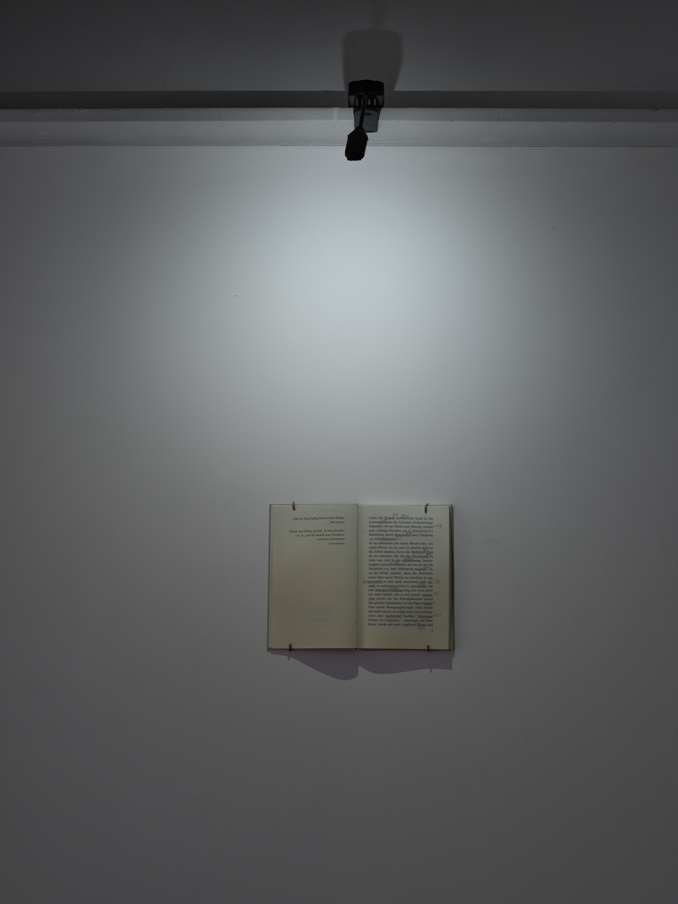
book,
21 × 14.8 × 2.5 cm, 2026
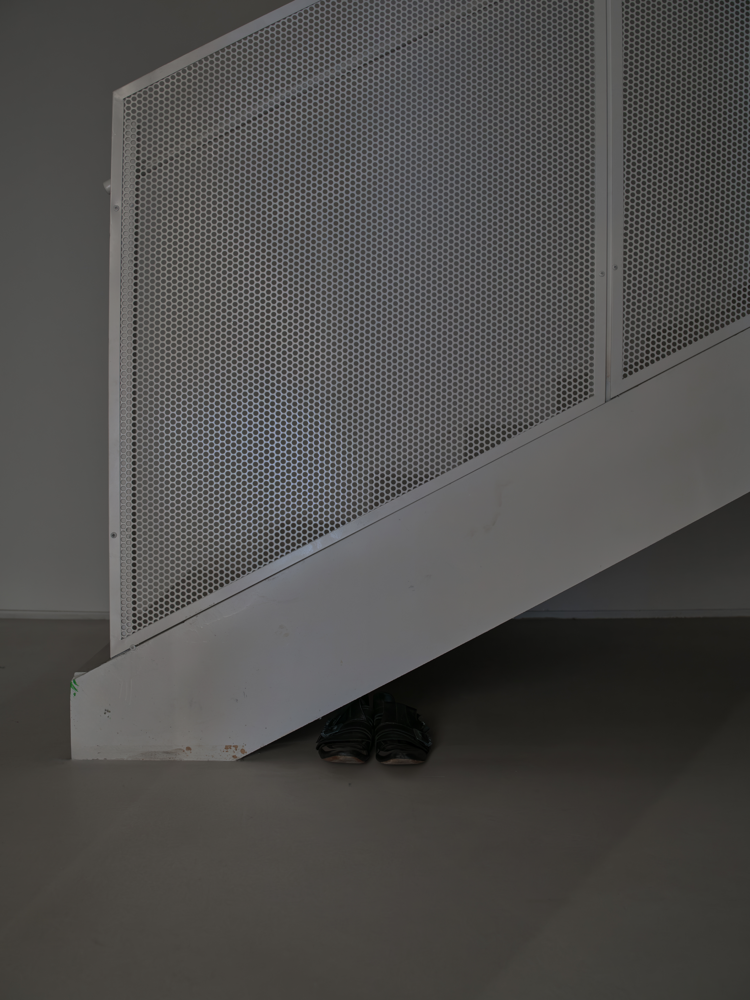
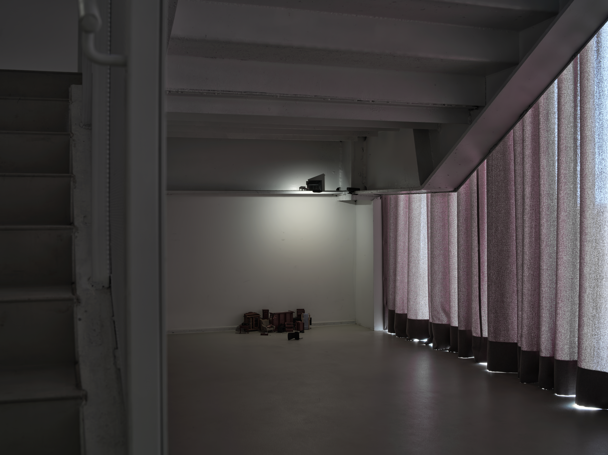
found miniature furniture,
dimensions variable, 2026
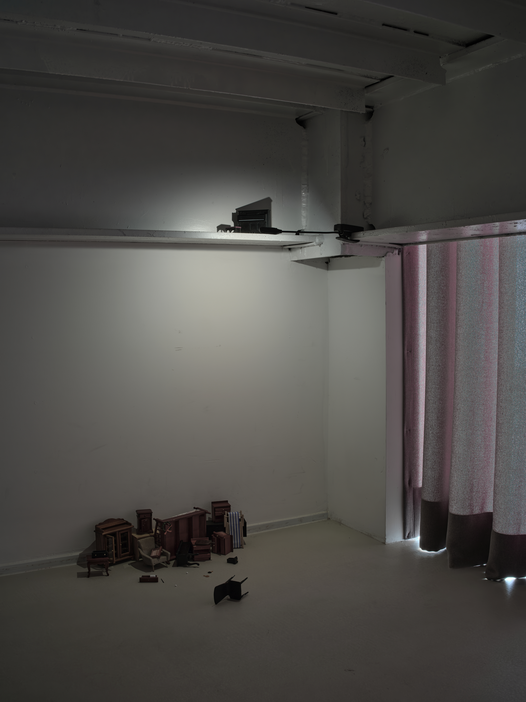
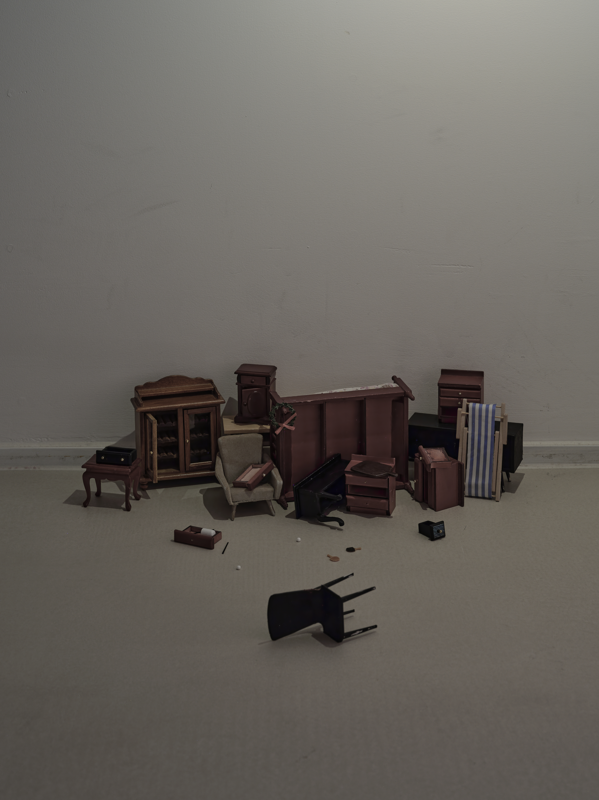
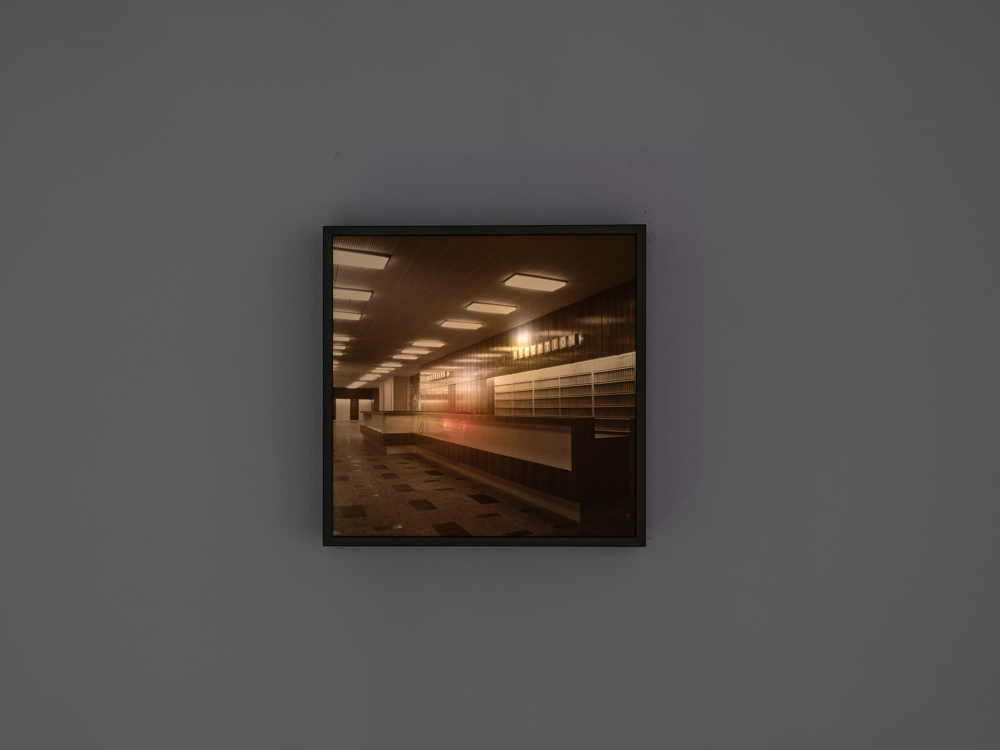
Bundesarchiv, Bild DH 2 Bild-A-07748, photograph by Bernd Settnik,
inkjet print, micro LED diodes,
20 × 20 cm, 2026
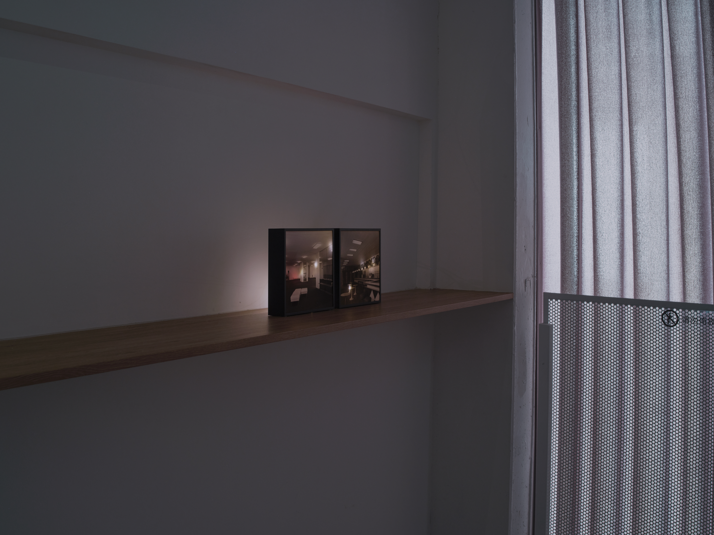
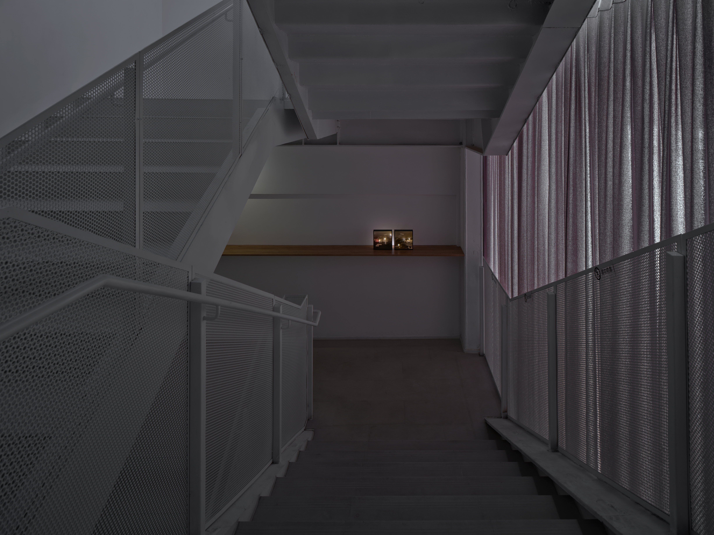
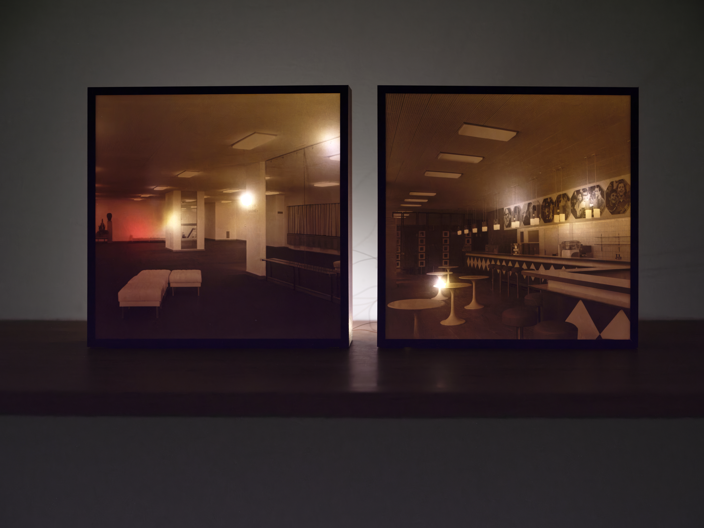
Bundesarchiv, Bild DH 2 Bild-A-07916, photograph by Bernd Settnik, 1970,
inkjet print, micro LED diodes,
20 × 20 cm, 2026
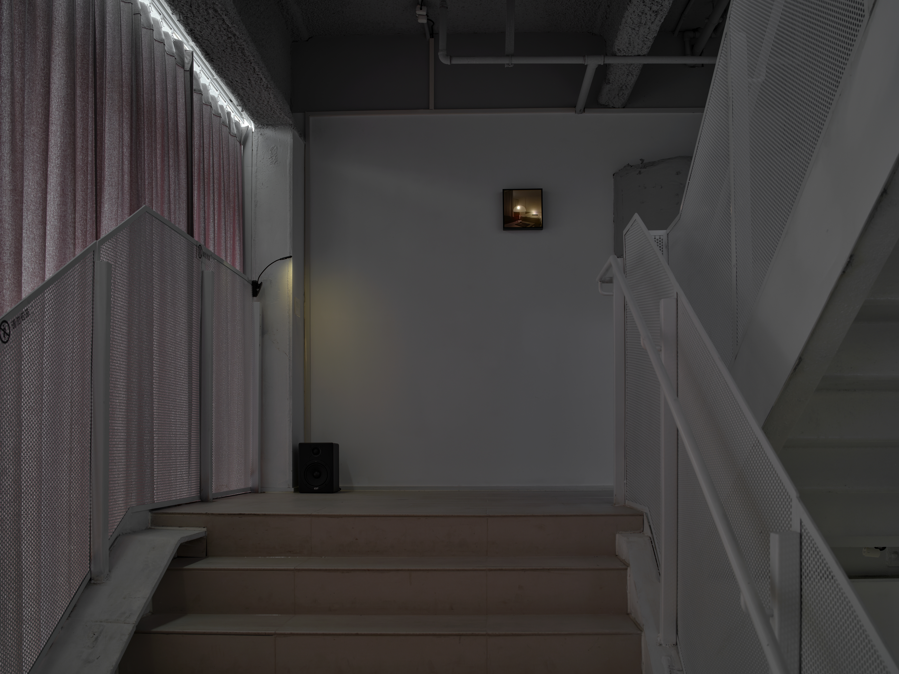
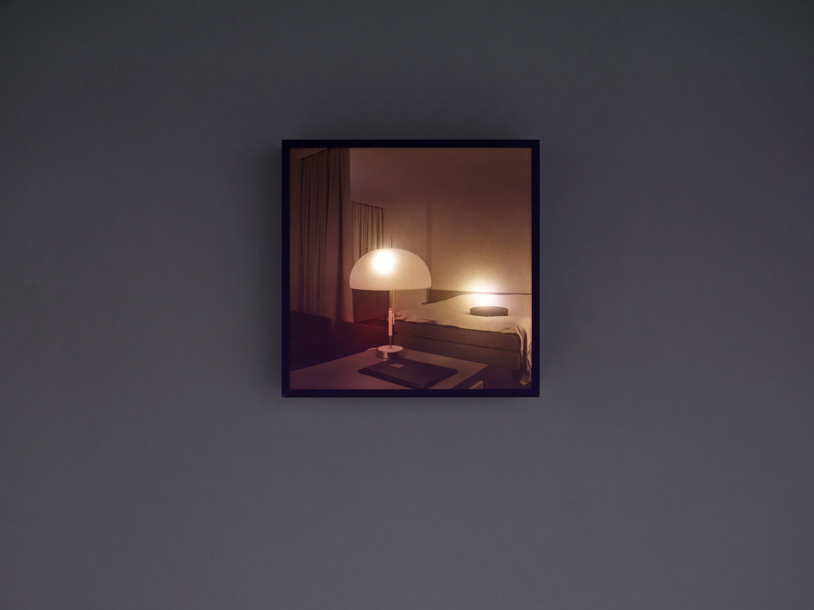
Bundesarchiv, Bild DH 2 Bild-A-07907, photograph by Bernd Settnik, 1970,
inkjet print, micro LED diodes,
20 × 20 cm, 2026
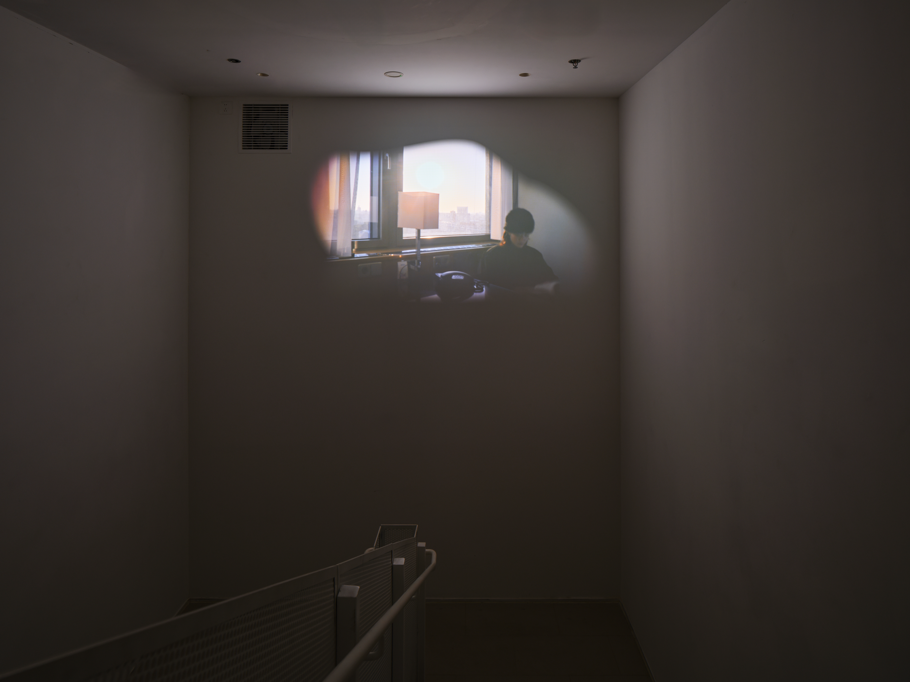
single-channel video,
2′19″, 2022